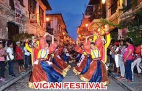

Bagnet
Traditionally dried under the sun, marinated then deep-fried to make it crisp and tender, Bagnet is recognized as the region’s delicacy symbol. This huge chunk of meat with crunchy golden skin that was fried to perfection can be eaten at any time of the day which is convenient for travelers as it is available basically everywhere. One bite and you’ll get hooked so be wary of this cholesterol-rich slice of heaven.
Festivals!
A week long of fiesta of Vigan characterized by carnivals, parades, musical extravaganzas, beauty and popularity contests, and nightly cultural shows, culminating with the celebration of the "conversion" of St. Paul the apostle, the town's patron saint, on January 25.
Vigan Town Fiesta
The observance of the Holy Week is one of Vigan's foremost tourist attractions. Tourists flock to join local devotees in the religious processions with life-size statutes in "carrozas" and participate in the traditional "pasion" and "visita iglesia". Its own share of religious pageantry and the people's public demonstration of sanctity and piety make its local rendering a memorable experience for all.
Semana Santa (Holy Week)
[ Basic Info ] [ Tour ] Cultural-Religious Events [ Arts and Crafts ] Cultural-Religious Events Vigan Town Fiesta A week long of fiesta of Vigan characterized by carnivals, parades, musical extravaganzas, beauty and popularity contests, and nightly cultural shows, culminating with the celebration of the "conversion" of St. Paul the apostle, the town's patron saint, on January 25. Semana Santa (Holy Week) The observance of the Holy Week is one of Vigan's foremost tourist attractions. Tourists flock to join local devotees in the religious processions with life-size statutes in "carrozas" and participate in the traditional "pasion" and "visita iglesia". Its own share of religious pageantry and the people's public demonstration of sanctity and piety make its local rendering a memorable experience for all. Viva Vigan Festival of Arts In an effort to increase public awareness of Vigan as a unique historic town to be conserved and protected, the Save Vigan Ancestral Homes Association, Inc. (SVAHAI), a local non-government organization involved in the conservation of Vigan Heritage, initiated the 1st Viva Vigan Festival of the Arts in May 1993. The highlights of ancestral houses. With the help of members of print and broadcast media, as well as Manila-based proponents of conservation, the first festival was a success.
Viva Vigan is held every 1st week of May. It features a calesa parade, comedia, street dancing, ramada games, religious rituals, santacruzan, bankathon, exhibits, trade/food fairs and other exciting events.
Viva Vigan Festival of Arts

Transportations
Things to bring when visiting Vigan and tips when visiting vigan
- 1.travelers are advised to pack light with comfortable clothing, preferably cotton,
- 2.well-soled sneakers or slippers for walking on the uneven cobblestone streets
- 3.Hair conditioner, mosquito repellent and sunscreen protection are a must to protect your hair and skin.lton
- 4.The best advise to visitors is to take a calesa (horse-drawn carriage) ride when touring the UNESCO Heritage Village and nearby sights. The rate is Php 150 per hour. You can decide on the places you want to visit from the map you've secured. Inform the driver about it before the start of the calesa ride.